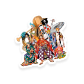

Pensadores da Animação
Você
Salve galera, tudo bom ? Então rodei, meu prof pediu pra eu fazer uma pesquisa sobre anima√ß√£o üò±üò± ! Voc√™s me ajudam?üñ§
Te ajudo meu filho
O homem é responsável pela maneira de como o próprio pensamento foi desenvolvido. Juntamente de nossa evolução, foi se tornando presente um afastamento do pensamento daquilo que consideramos o "mundo real", e assim, foi se formando uma distância cada vez maior entre a imagem e o seu referencial.
Flusser
Flusser está digitando...
Conhe√ßa um pouco mais sobre o mundo de One Piece, seus personagens e suas aventuras ü襂Äç‚ò†Ô∏èü襂Äç‚ò†‚öì! Preparamos aqui um resuminho de tudo que já aconteceu durante esses anos da anima√ß√£o no ar üì∫, então confere a√≠ o que rolou, ou pelo menos tudo que rolou por enquanto... üò≤üò≤
Os Simpsons √© um fen√¥meno mundial não s√≥ da anima√ß√£o mas do entretenimento como um todo ü§Øü§Ø, por isso separamos aqui algumas curiosidades sobre eles que voc√™ talvez ainda não saiba, confere a√≠! üßêüßê
Tanto Os Simpsons como One Piece possuem um impacto cultural, social e econômico muito grande devido à sua popularidade e influência.
Os Simpsons em seus episódios buscam satirizar e fazer diferentes críticas a nossa sociedade atualmente, sempre abordando temas atemporais e importantes de uma forma leve e fácil de ser compreendida.
Em One Piece, diferentes arcos e histórias se desenrolam durante os episódios, sempre de forma linear e contínua, e na maioria das vezes, os episódios dependem muito um do outro para compreensão da narrativa. Mesmo que seu foco não seja abordar temas atuais ou fazer críticas sobre o nosso mundo, nas entrelinhas, estão presentes assuntos importantes e que estão presentes no nosso cotidiano.
Infelizmente nosso almanaque vai ficando por aqui üòî üòî. Mas ainda não √© hora de dar tchau! Se voc√™ chegou at√© aqui temos uma surpresinha extraüéÅ üéâ. Separamos alguns v√≠deos super interessantes que mostram um pouco sobre a evolu√ß√£o da anima√ß√£o e como a influ√™ncia japonesa e americana nos desenhos está presente no mundo todo (spoiler: √© um epis√≥dio de simpsons que foi ao ar neste ano de 2022!üò± üò±)